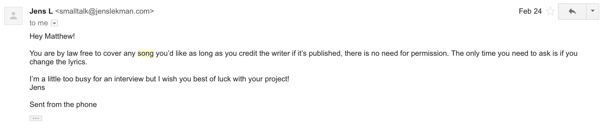

The songwriting outlet for Matthew Gilbert. Accompaniment currently:
Emma,
Maxwell,
Sierra.
Here is where all of his music is presently housed.
Here is where you can purchase the MAGAZINE.
Words Images Dates Socials Contact
MODERN AMERICAN FOLK SONGS, VOLUME ONE, VERSION ONE FEATURING MAXWELL PETERSON, SIERRA SKYE, AND EMMA RYAN
1. FRUITS OF MY LABOR BY LUCINDA WILLIAMS
2. THE PUBLIC SCHOOL SYSTEM BY ANDREW CHOI
3. NICE AND QUIET BY AZNIV KORKEJIAN
4. CHERRY WINE BY ANDREW HOZIER-BYRNE
5. A POSTCARD TO NINA BY JENS LEKMAN
6. AVANT GARDENER BY COURTNEY BARNETT
7. THE MISEDUCATION OF LAURYN HILL BY MS. LAURYN HILL
8. REEL AROUND THE FOUNTAIN BY MORRISSEY AND JOHNNY MARR
9. LULLABY BY LOUDON WAINWRIGHT III
10. BETWEEN THE BARS BY ELLIOTT SMITH
11. AT YOUR BEST (YOU ARE LOVE) BY THE ISLEY BROTHERS AND CHRIS JASPER, IMMORTALIZED BY AALIYAH
12. DEAR THEODOSIA BY LIN-MANUEL MIRANDA
13. HIGGS B BY FRANK OCEAN
14. CASIMIR PULASKI DAY BY SUFJAN STEVENS
15. PIAZZA, NEW YORK CATCHER BY STUART MURDOCH
RECORDED AND PRODUCED BY MATTHEW GILBERT IN HIS EMPTY LOS ANGELES APARTMENT,
EXCEPT TRACK 10, WHICH WAS RECORDED AND PRODUCED BY SIERRA SKYE IN HER EMPTY PORTLAND APARTMENT.
ALL SONGS LICENSED UNDER CREATIVE COMMONS. COVER PICTURE BY DURIEL MEISNER.
EQUIPMENT LIST:
PROMINY HUMMINGBIRD VIRTUAL GUITAR
MODIFIED CELESTION G12M W/POLARITY REVERSED
AMPEX MICRO 70
